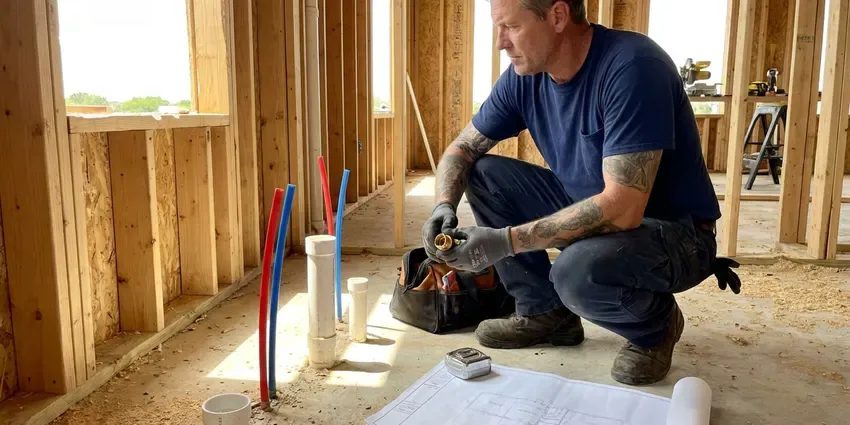

Backflow Preventer in Milford, CT
Keep irrigation, fire lines and commercial equipment up to code in Milford, CT with professional backflow preventer service.
- RPZ, PVB and DCVA Experts
- Upfront Pricing
- Quick Annual Test Scheduling
- Guaranteed Workmanship
Certified Backflow Preventer Help in Milford, CT.
If your assembly fails, we can usually repair or rebuild it on the same visit and test it again.
Certified Backflow Preventer Testing and Installation in Milford, CT
At GLV Plumbing, we understand the importance of a working backflow preventer in Milford, CT. Our plumbers are trained to handle all types of backflow devices, from testing and routine maintenance to complex repairs and new installations, safeguarding your family's health.
Our expertise includes:
- Repairs and replacements for all types and brands.
- Annual certified testing of RPZ, DCVA and PVB assemblies
- Rebuilding check valves, relief valves and worn rubber parts

Additional Plumbing Maintenance Services in Milford, CT
Our maintenance and specialty plumbing services in Milford, CT protect your home year-round and extend the life of every system.


Customers
Why Choose GLV Plumbing for Backflow Preventer in Milford, CT?
In Milford, maintaining your backflow preventer is not just good practice, it's often a code requirement to protect public health. Permits and inspections are usually required for water heater replacements, boilers, repiping, and sewer or septic work. Our team makes sure your system meets all local regulations and operates effectively.
- Prevent Damage, Proper backflow prevention avoids costly contamination and potential damage to your home's entire plumbing system.
- Health Safety, Prevent sewage, chemicals, and other pollutants from entering your potable water supply.
- Paperwork Handled, We submit test reports with your water provider on your behalf.
Citywide Coverage
No matter where you are located within Milford, CT, GLV Plumbing has your backflow prevention needs covered. We understand the varied plumbing systems across the area and provide tailored solutions to each homeowner.
Experienced Team
Our team of plumbers has wide experience with all types of backflow preventer systems common in Connecticut. They undergo regular training to stay current on the latest devices, testing procedures, and local code updates in Milford.
Safety-First Approach
We follow strict safety protocols for every backflow prevention job, from initial testing to final installation. Our commitment to compliance means your water system is protected against contamination risks to the highest standards.
Trusted Certified Milford Plumbing Services Professionals
At GLV Plumbing, we take pride in providing certified plumbing services throughout Milford, CT. Backed by leading industry credentials, our experienced plumbers combine technical skill with genuine customer care. Whether it is repair, installation, or maintenance, we follow strict safety and quality standards to deliver long-lasting results you can trust.
Call Us Now PHCC Plumbing Contractor Recognition
PHCC Plumbing Contractor Recognition Better Business Bureau (BBB) Accreditation
Better Business Bureau (BBB) Accreditation Angi Certified Pro
Angi Certified Pro ISO 9001 Quality Management Certification
ISO 9001 Quality Management CertificationTrusted Backflow Preventer Services in Milford, CT
Reduced Pressure Zone Assembly Service in Milford, CT
RPZ assemblies protect against high-hazard cross-connections at restaurants, medical offices, car washes and buildings with chemical feed systems. They have two check valves and a relief port that discharges water if a check fails. We install, test and rebuild RPZ units from Watts, Febco, Wilkins and Apollo. Proper drainage is designed for the relief port discharge.

Backflow Preventer Repair in Milford, CT
If your backflow preventer fails its annual test or shows signs of malfunction, GLV Plumbing offers professional repair services. Common issues include worn-out check valves, faulty relief valves, or damaged springs. Our team carries a wide range of replacement parts for leading brands like Watts, Wilkins, Febco, and Conbraco. We diagnose the exact problem and perform precise repairs to restore your device's full protective function, heading off potential water contamination in Milford.
Backflow Preventer Testing in Milford
GLV Plumbing provides certified backflow preventer testing required by many Connecticut municipalities. We use specialized equipment to check the device, making sure it properly prevents reverse flow. Our technicians are licensed to perform these annual tests and submit all required reports to your local water authority, helping you avoid fines and stay compliant. We test all common types, including RPZs, DCVAs, and PVBs, with accurate readings and proper operation.
Backflow Preventer Cost & Value in Milford, CT
The cost of backflow preventer services in Milford, CT varies depending on the type of service, such as testing, repair, or installation, and the device involved. While there is an initial investment, a working backflow preventer provides invaluable protection for your health and avoids potential fines or costly contamination cleanup. We offer transparent pricing and detailed estimates before any work begins.
New Backflow Preventer Installation in Milford
Whether you are installing a new irrigation system, fire suppression system, or need to replace an outdated device, GLV Plumbing handles professional backflow preventer installations. We assess your property's needs and local plumbing codes to recommend the correct type and size of backflow preventer. Proper installation is critical for effective operation, and our certified plumbers make sure your new device is correctly fitted, tested, and compliant with all Milford standards.
Febco Backflow Preventer Experts in Milford
Febco backflow preventers are commonly found in commercial and irrigation applications. GLV Plumbing provides professional service for all Febco models, including the 825Y and 860 series. We understand the details of Febco designs and can quickly troubleshoot, repair, or replace components like check valves, relief valves, and air inlets. Trust us to maintain your Febco device to factory specifications so it keeps protecting against backflow events.
Residential Backflow Solutions in Milford
For homeowners in Milford, a backflow preventer is important for protecting against contaminants from garden hoses, irrigation systems, or cross-connections within your home's plumbing. GLV Plumbing offers custom residential backflow solutions, from installing atmospheric vacuum breakers for hose bibs to more robust devices for whole-home protection. We make sure your family's drinking water stays clean and your home meets all local water safety regulations.

Commercial Backflow Services in Milford, CT
Businesses in Milford often have more complex backflow prevention requirements due to higher water usage and varied plumbing systems. GLV Plumbing provides full-service commercial backflow services, including large-scale testing, repair, and installation for multi-unit properties, industrial facilities, and restaurants. We understand the demands of commercial operations and work quickly to minimize disruption, keeping your business compliant and your water supply safe.
Backflow Preventer Near Me in Milford, CT
When you search for 'backflow preventer near me' in Milford, CT, GLV Plumbing is your local, go-to choice. We are deeply familiar with Milford's plumbing infrastructure and the challenges local water systems face. Our nearby location means faster response times and technicians who understand local codes and conditions.
Choosing a local company like GLV Plumbing for your backflow preventer needs means personal service and a commitment to our community in Milford. We pride ourselves on being accessible and responsive to all our customers, providing peace of mind that your water supply is safe.
GLV Plumbing at a Glance
- Licensed and insured plumbers serving Milford, CT
- 24/7 emergency service with same-day scheduling
- Clear written estimates, no hidden fees
- 4.8-star rated by 946+ Connecticut customers
Milford Map
Milford Information
- Population
- 50,421
- Area codes
- Local
- Service area
- Milford and communities within 40 miles
- Nearby
- West Haven, Bridgeport, New Haven, Norwalk
With busy irrigation systems and changing water demand, a working backflow preventer is vital for protecting Milford, CT homes from potential water contamination.
Expert Services
Trust our professionals for reliable GLV Plumbing solutions in Milford, CT.
Our Specialized Plumbing Services in Milford, CT
At GLV Plumbing, we provide a complete range of plumbing services across Milford, CT. From leak detection to full system installations, our team ensures fast, precise, and affordable service for both residential and commercial properties. Explore our core services below:


How Our Backflow Preventer Process Works in Milford, CT
At GLV Plumbing, we make backflow preventer service straightforward and efficient. Here is what you can expect when you choose us.
Request a Quote
Call (860) 487-7330 with your test notice or a description of your assembly. We confirm pricing and schedule a certified technician.
Test the Assembly
We connect calibrated gauges and test every check and relief valve. Results are written up on your provider's form.
Repair and File
If the assembly fails, we rebuild or replace it and retest. Then we file the passing report with your water provider.
Frequently Asked Questions About Backflow Preventer in Milford
Backflow preventer testing in Milford, CT typically costs between $75 and $150. This fee covers the technician's visit, the test itself, and the submission of required reports to your local water authority. Complex commercial systems or multiple devices may incur higher costs.
No, backflow preventer installation and major repairs should only be performed by a licensed and certified plumber. Improper installation or repair can lead to water contamination, which poses serious health risks and can result in steep fines from local authorities. Specialized tools and training are required.
We service Watts, Febco, Zurn Wilkins, Apollo and other common brands. Our trucks carry rebuild kits for common models. Less common parts can usually be ordered fast.
Signs of a failing backflow preventer include discolored water, strange odors from your tap, a noticeable drop in water pressure, or visible leaks around the device itself. If you notice any of these, contact a professional plumber immediately to assess the issue.
We service all major brands of backflow preventers, including Watts, Wilkins, Febco, Conbraco and Apollo, and Zurn. Our technicians are trained and equipped to handle many models and types, so your device receives expert attention and the proper parts for repair.
Most municipalities and water utilities require backflow preventers to be tested every year. This confirms the device is working correctly to protect the public water supply from contamination. We can help you schedule these routine inspections.
No, backflow preventer testing and repair must be performed by a licensed and certified backflow prevention assembly tester. Permits and inspections are usually required for water heater replacements, boilers, repiping, and sewer or septic work. Improper handling can lead to dangerous water contamination.
GLV Plumbing services all major types of backflow preventers, including Reduced Pressure Zone Assemblies, Double Check Valve Assemblies, Pressure Vacuum Breakers, and Atmospheric Vacuum Breakers. We work with leading brands like Watts, Wilkins, Febco, and Conbraco.
What People Are Saying About Our Plumbing Experts?

Patricia H.
We had a slab leak that two other companies could not find. GLV Plumbing located it in under an hour, explained our options, and the price matched the quote to the dollar.
Slab Leak Repair · Bridgeport, CT
Robert G.
The trenchless sewer replacement saved our front yard. They walked us through the camera inspection footage first so we knew exactly what we were paying for.
Sewer Line Replacement · Milford, CT
Daniel K.
A pipe burst at 11 pm and they actually answered. The plumber showed up within the hour, shut everything down, and had us back to normal the next morning. Could not ask for more.
Emergency Plumbing · New Haven, CT
Sofia M.
Two new toilets installed in one visit, no mess left behind, and the tech even adjusted a faucet he noticed was dripping. Fair pricing and really friendly.
Toilet Installation · Waterbury, CTLaura S.
I scheduled a water heater replacement, and the team made the process smooth and affordable. The new unit works perfectly, and they cleaned up after completing the job.
Water Heater Replacement · Waterbury, CT
Mark T.
When our office needed drain cleaning, GLV Plumbing provided quick, reliable service. The plumber arrived on time and made sure every drain flowed perfectly before leaving. Very satisfied.
Drain Cleaning · New Haven, CT